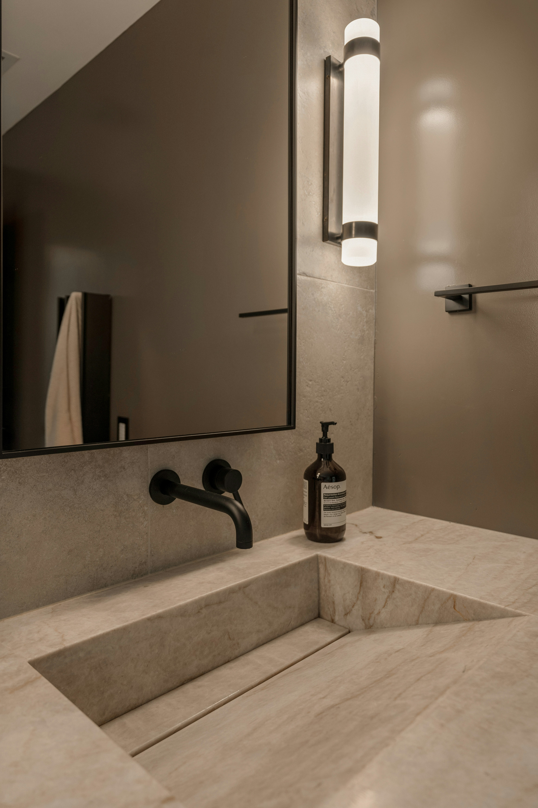

KBRS-engineered 100% waterproof systems + large-format porcelain.
Built to last in real wet environments — not just look good on day one.
Tile and grout are not waterproof. Traditional showers use materials that absorb moisture, trap it behind the walls, and eventually cause mold, rot, and costly repairs.
At ROX Porcelain Works, we don’t install that way.

KBRS invented a better way to build tile showers. Their patented composite technology creates fully waterproof, pre-sloped bases and curbs that eliminate the weak points found in traditional mortar-bed or sheet-membrane systems.
Factory-waterproofed Tile-Basin® pans and HardCurb® — no thinset, no seams that can fail.
Point drains or linear drains. Standard or fully custom layouts.
Advanced composite materials used in marine construction — extremely strong, mold-resistant, and designed for constant water exposure.
Perfect base for the beautiful, low-maintenance porcelain we specialize in.
We are a proud Authorized KBRS Hard Core Dealer serving the Clearwater / Tampa Bay area.
Bathrooms destroy traditional wood or laminate vanities. Moisture causes swelling, delamination, staining, and failure — often within just a few years.
Our porcelain-clad vanity vessels solve this permanently. The entire visible surface is wrapped in dense, non-porous large-format porcelain — the same material we use in our showers.
✅ Zero water absorption
✅ Extremely scratch and stain resistant
✅ Modern seamless look with minimal grout lines
✅ Built to last decades in real-life wet conditions

Everything we install is built as a true waterproof assembly — not just a pretty surface.
Tile-Basin® pans and ShowerSlope systems with HardCurb®.
Low-profile, high-flow options in multiple finishes.
Zero-threshold, fully integrated designs with minimal grout.
Factory-waterproofed shelves, benches, and ramps.
We educate first and sell second. If you're planning a bathroom remodel in the Clearwater area, let's talk about your real options.